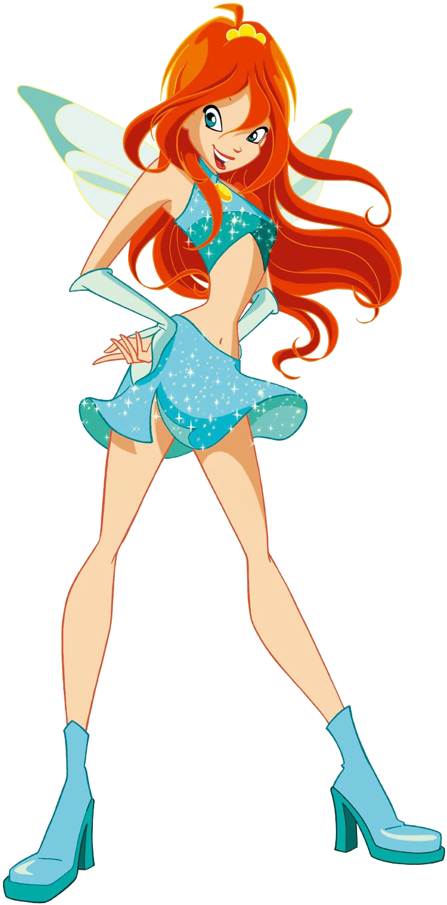
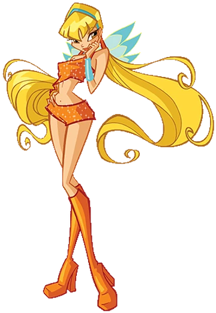
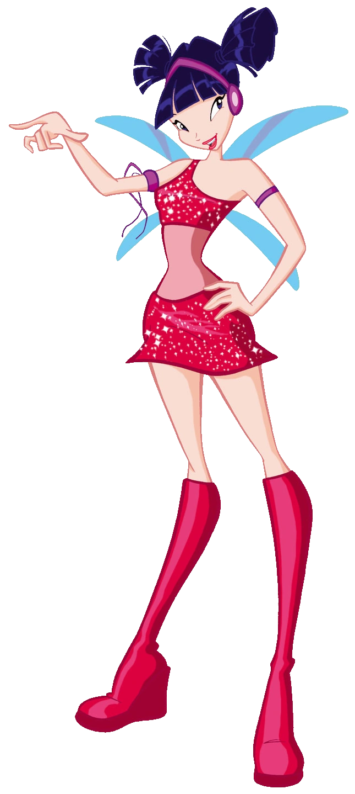
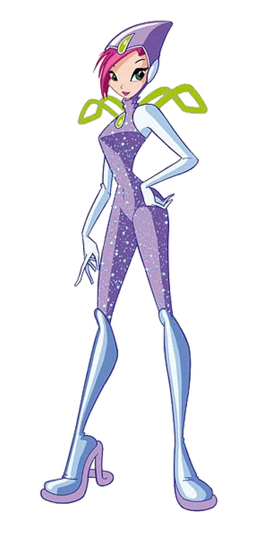
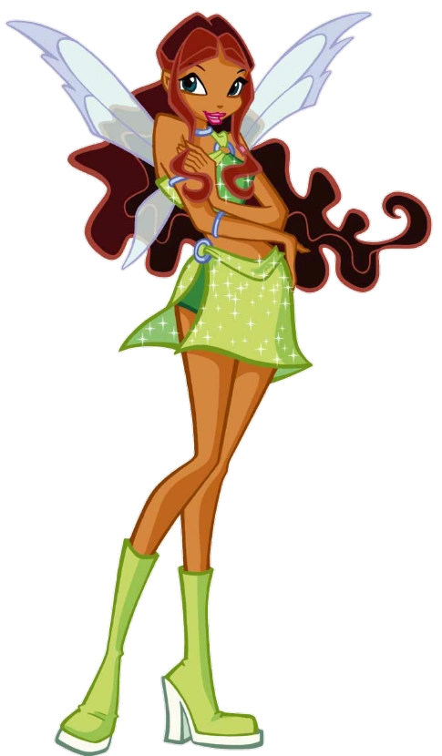
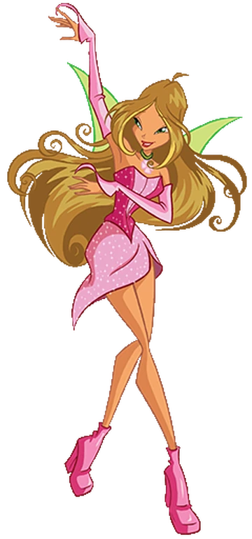

Bloom is the fire fairy! She was raised on Earth but is actually from Domino and is the keeper of the dragon flame. She is also is the Guardian fairy there!
Stella is the sun fairy! She is the princess of her home planet Solaria and is the Guardian fairy there!.
Musa is the music fairy! She is from the planet of music called Melody and is the Guardian fairy there!
Tecna is the technology fairy! She is from Zenith and is the Guardian fairy there!
Aisha is the water fairy! She is the princess of Andros and is the Guardian fairy there! In some dubs her name is Layla!
Flora is the earth fairy! She is from Linphea and is the Guardian fairy there!
All of them have different forms with different abilities some of them are Charmix, Enchantix, Believix, Sirenix and Bloomix. They also have different companions there are the Pixies, Fairy Pets, and Selkies!